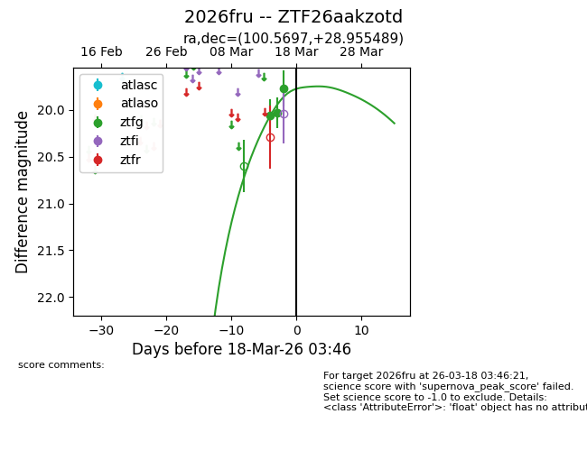
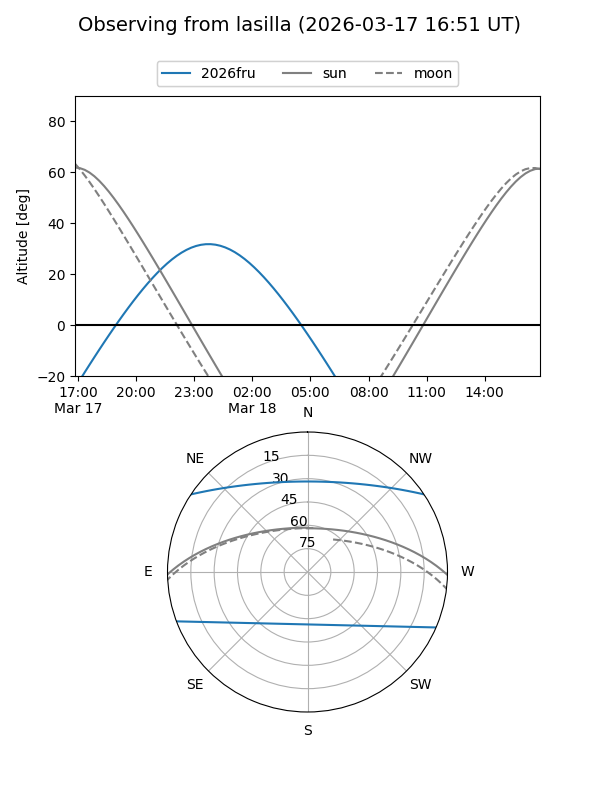
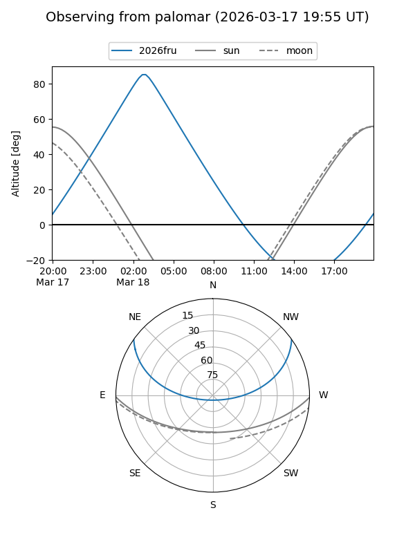
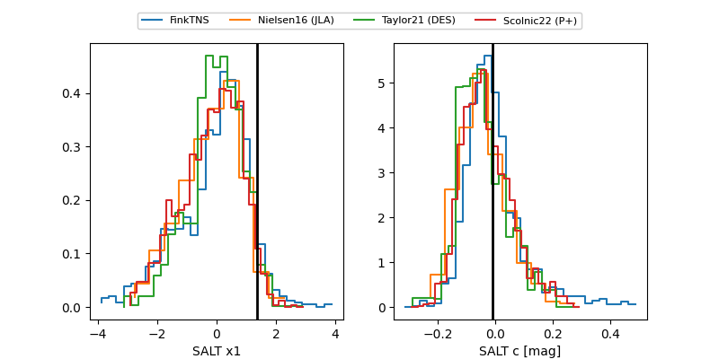

2026fru
Target 2026fru at 2026-03-18 03:47
Aliases and brokers:
FINK: link
Lasair: link
ALeRCE: link
TNS: link
YSE: link
alt names
ZTF26aakzotd (ztf,fink_ztf)
2026fru (tns,yse)
Coordinates:
equatorial (ra, dec) = 100.5697,+28.95549
equatorial (HMS+DMS) = 06:42:16.72,+28:57:19.76
galactic (l, b) = (185.8626,+10.93188)
Flags:
Photometry:
last ztfg=19.77
3 ztfg detections
Lightcurve

Visibility


Additional plots
